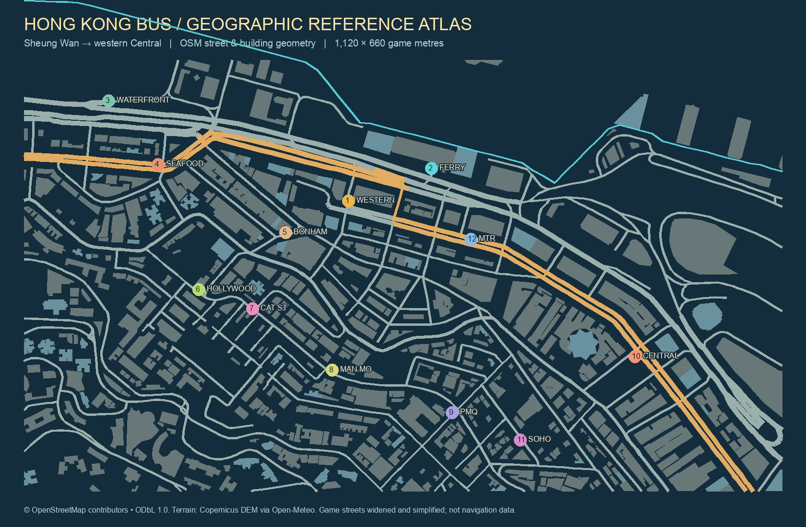

Reference evidence and deliberate playable adaptations. This board links street photographs for research; the game uses original geometry and materials, with OpenStreetMap-derived geographic data.
Geographic structure

1,120 × 660 game metres, 0.8 horizontal scale. The harbour forms the northern edge; Des Voeux Road carries the tram corridor; Bonham Strand and Wing Lok Street form an irregular commercial lattice; Hollywood Road climbs into the smaller lanes of Tai Ping Shan and SoHo. Actual footprints create tight blocks, corners and alleys.
David Clarke, 9 December 2015. Hong Kong in Transition / HKU source and copyright. Remote reference only; not a game texture.Game comparison: actual tram corridor, original shops and projecting signs, window AC units, wires, varied façades and narrow plots. Captured directly from the baked Godot map.
The façade is a continuous wall close to the pavement, rather than isolated towers in open plazas.
Thin double-decker trams, overhead wire spans, curved rails and dense bilingual signs establish the local street character.
AC boxes and mismatched window bays add human-scale depth. Restrained original colours avoid copying commercial branding.
Bonham Strand: trade and market detail
David Clarke / Hong Kong in Transition. Source and copyright. Awning edges, outdoor racks and varied shop widths inform original street dressing.Game comparison: curved commercial blocks and street-front detail.
Landmarks and hill routes
Western Market references: brick frontage, cream stone bands, tall windows and a corner turret. Man Mo Temple: small white-walled temple with green tiled roof, surrounded by tall urban buildings. Their relative positions come from OSM footprints, not a fictional relocated landmark arrangement.